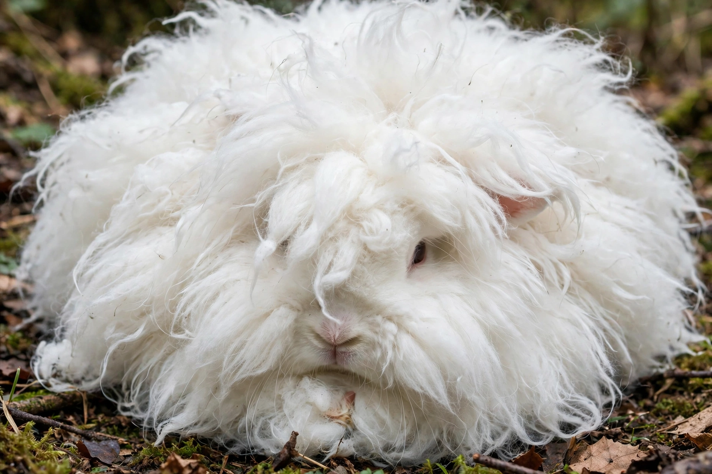

The Angora rabbit is one of the oldest types of domestic rabbit, believed to have originated in Ankara (historically Angora), Turkey. It is bred for its long, soft wool, known as Angora wool, which is harvested by shearing, combing or plucking every three to four months.
| Angora rabbit | |
|---|---|
| Origin | Ankara, Turkey |
| Recognised breeds | English, French, German, Giant, Satin, Chinese, Finnish, Japanese, Korean, Russian, St Lucian, Swiss |
| Use | Wool production, show, pets |
The American Rabbit Breeders Association recognises several Angora breeds. The English Angora has long wool covering its face and ears; the French is larger with a cleaner face; the German is bred for high wool yield; the Giant is the largest; and the Satin has a distinctive sheen to its fibre.
Angora wool is about 11 microns in diameter, hollow-cored, and much warmer and lighter than sheep's wool. It is too smooth to hold together easily, so it is usually blended with other fibres. China produces the great majority of the world's Angora. Commercial harvesting practices, especially live plucking, have drawn sustained animal-welfare criticism, leading many fashion retailers to ban Angora from the mid-2010s.
The rabbits need regular grooming to prevent matting and "wool block", a potentially fatal gastrointestinal condition caused by ingested fur; frequent harvesting of the coat greatly reduces the risk.
Angora rabbit — recreated from memory.